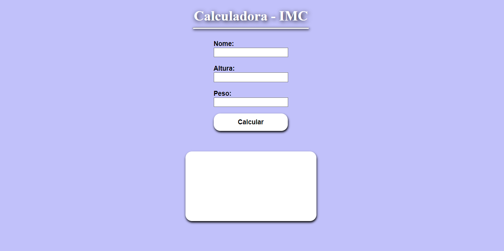
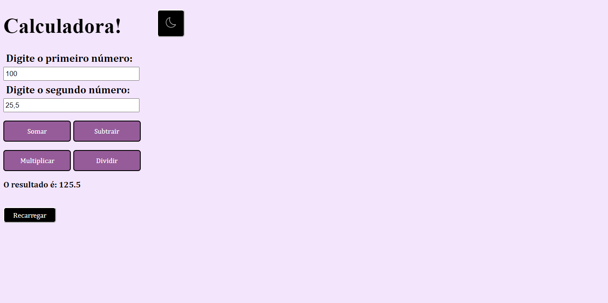
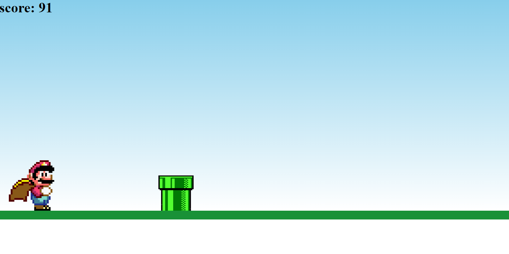
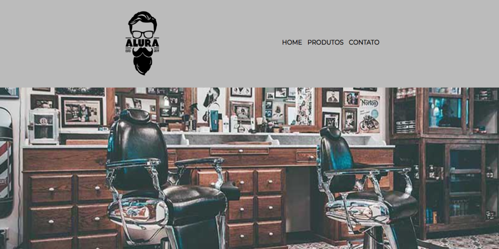

< Sobre mim >
Olá, eu sou a Isabela Fagundes!
Possuo 18 anos e moro em Cajamar, no estado de São Paulo. Atualmente estou realizando o curso superior de tecnologia em Análise e Desenvolvimento de Sistemas na Faculdade de Tecnologia (FATEC) de Santana de Parnaíba. As principais tecnologias que estou estudando no momento são voltadas para a área de front-end, porém também sigo estudando tecnologias back-end. Caso tenha interesse, abaixo você pode acessar meu currículo:
< Habilidades >
-
JavaScript
-
HTML5
-
CSS3
-
Criativa
-
Rápido aprendizado
-
Comunicativa
-
Proativa
-
Trabalho em equipe
< Projetos >
-

Calculadora de IMC
Este projeto é capaz de calcular o IMC com o peso e altura inserido pelo usuário. O programa ainda exibe alertas caso algum campo não seja preenchido.
-

Calculadora Simples
Neste projeto foi desenvolvido uma simples calculadora, que efetua a soma, subtração, divisão ou multiplicação de dois números inteiros e/ou decimais.
-

Mario Jump Game!
Mario Jump Game, é um jogo em que o objetivo principal é desviar dos obstáculos e adquirir a maior pontuação possível!
-

Barbearia Alura
Projeto desenvolvido a partir do curso de CSS e HTML ministrado pelo professor Pedro Marins na Alura.